|
<< Click to Display Table of Contents >> Condition Builder |


|
Condition Builder
|
<< Click to Display Table of Contents >> Condition Builder |
|
The Condition Builder is a very powerful feature that allows you to define complex conditions for your alerting systems without having to know how to program. The sections below assume you have read and understood how to configure the alerts dialog and understand how to select a Condition Object to be used in the condition. If you have not yet, please be sure to review the material under Configuring Alerts.
 Understanding the Condition Builder
Understanding the Condition Builder
Condition BuilderMost if not all trading system code wizards are limited in scope in that they provide canned pre-defined expressions and only allow you to change a few parameters on those expressions. The NinjaTrader Condition Builder is advanced in that you can develop powerful expressions with extensive configurations. Due to its power and flexibility, it is extremely important that you read through and understand its capabilities.The Condition Builder can be accessed via the Alerts Dialog screen by selecting the "add" text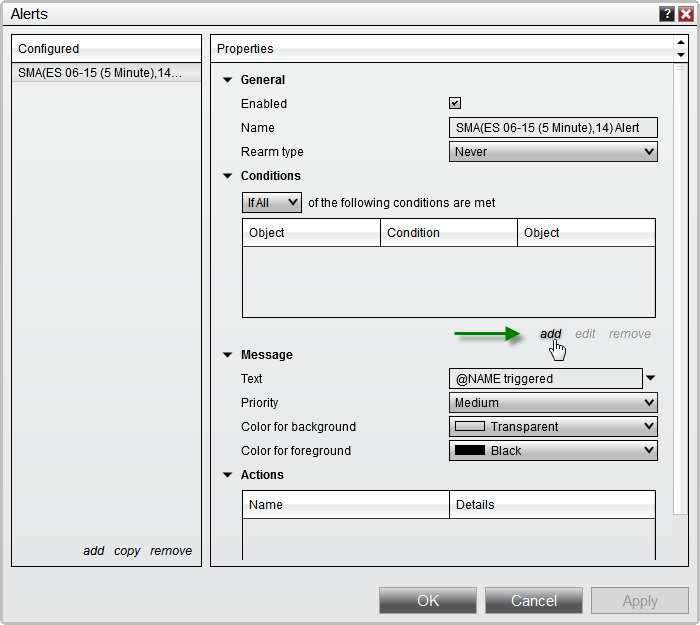Basic OperationThe general concept of the Condition Builder to generate a Boolean expression also known as comparison expressions or conditional expressions. What does that mean? It is simply an expression that results in a value of either TRUE or FALSE. For example, the expression 2 < 7 (2 is less than 7) is a Boolean expression because the result is TRUE. All expressions that contain relational operators are Boolean. Boolean expressions or "Conditions" as they are known in NinjaTrader is used to determine when to take a specified action such as submitting an order or drawing on the chart.Looking at the image below, you can instantly see that the Condition Builder is set up like a Boolean expression. Select an item from the left window, select the relational operator (2) and compare it to a selected item in the right window.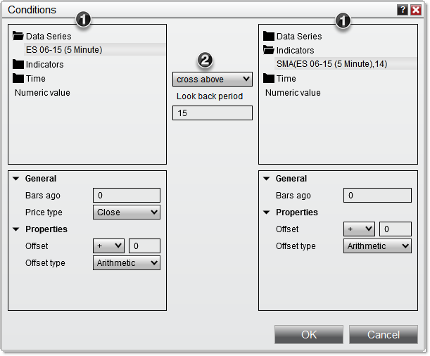1. Available items such as indicators, price data, etc. to use for the comparison2. List of relational operatorsRelational operator invalid comparisonsSince the relational operator will let you select any items from the left to compare to the right in the Condition Builder, you need to be mindful what you attempt comparing. For example comparing a price based value like the ES ##-## Data Series to the Time category Time Value would not be possible, and prompt the Condition Builder to issue an error like shown below -
"Type of left expression and right expression do not match, please select similar expressions"
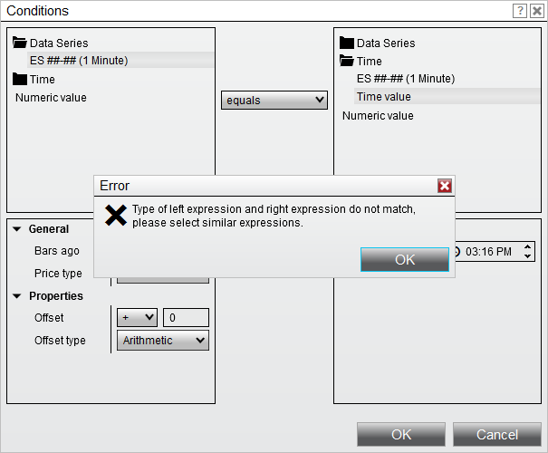
To work around, you would need to select expressions with a similar return value that would allow for a programmatic comparison. In the example used above, the ES ##-## Data Series provides an double value in return that is attempted to be compared to a time span value, which Time Value would return.
The correct approach is shown below, the ES ##-## price would return a double value which would be compared to the Numeric Value 2275 to see if the price will Cross Above that.
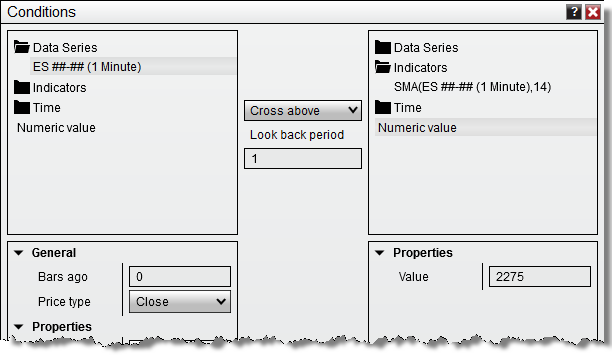 |
 How to make chart price data comparisons
How to make chart price data comparisons
Price Data ComparisonsYou can compare a chart's bar price data such as checking for a higher close. In order to compare the current bar value, to a previous bar value, we will need to use a Chart's Data Series as our condition object. In our example, we are using the ES 12-14 (1 minute) Data Series as our condition object.The following is an an example and represents one of many possible combinations.1.Select the Data Series and set the Price type to Close. 2.Select the "greater" relational operator 3.Select the Data Series and set the Price type to Close. 4.Set the Bars ago parameter to a value of "1" 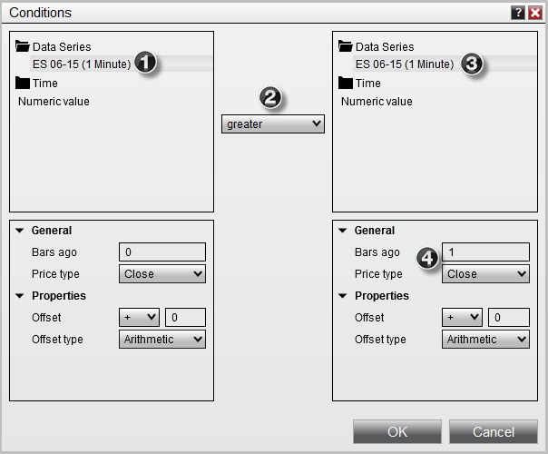Once the OK button is pressed, a condition is created that would translate to the following:"Current closing price is greater than the closing price of 1 bar ago" |
Offsetting an Item ValueYou can offset the value of most items available in the Condition Builder. An offset is a value that is added or subtracted from the actual item's value. When an item is selected such as an indicator or price data, the Offset type and Offset parameters become visible in the window directly below the item selected. This is shown as numbers 5 and 6 in the image below.
Offset type can be set to:
Once the Offset type is selected, you must set the value Offset.
The following is an example and represents one of many possible combinations:
1. Select the Data Series and set the Price type to Close 2. Select the "greater" relational operator 3. Select the Data Series and set the Price type to High 4. Set the Bars ago parameter to a value of "1" 5. Set the Offset type parameter to Ticks 6. Set the Offset parameter to a value of "1"
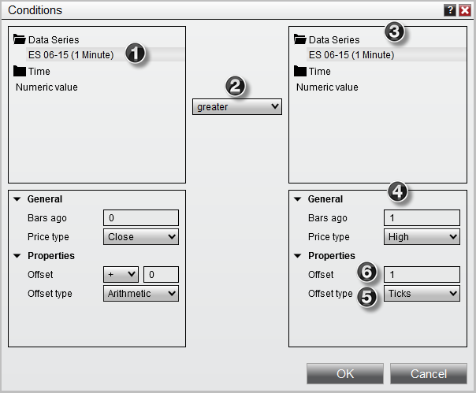
Once the OK button is pressed, a condition is created that would translate to the following:
"Current closing price is greater than the high price of 1 bar ago + 1 tick" |
 How to make indicator to value comparisons
How to make indicator to value comparisons
Indicator to Value ComparisonsYou can compare an indicator's value to a numeric value. This can come in handy if you wanted to check if ADX is over a value of 30 (trending) or if Stochastics is under a value of 20 (oversold) or any other conditions you can think of.
The following is an an example and represents one of many possible combinations. We have already added the ADX indicator to our chart so it is available as condition object.
1.Under the Indicators category, select the ADX indicator 2.Select the "greater" relational operator 3.Select the Numeric value category 4.Enter the numeric value
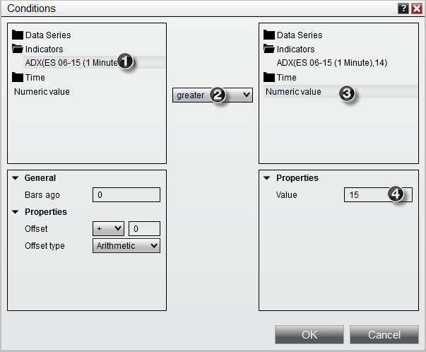
Once the OK button is pressed, a condition is created that would translate to the following:
"Current value of a 14 period ADX is greater than 15" |
 How to compare plot values of multi-plot indicators
How to compare plot values of multi-plot indicators
Comparing Plot Values of Multi-Plot IndicatorsYou can compare plots in the same indicator or select any individual plot within an indicator to create a condition.
The following is an example and represents one of many possible combinations. We have already added the Stochastics indicator to our chart so it is available as condition object.
1.Under the Indicators category, select the Stochastics indicator 2.Set the indicator plot and select the K plot 3.Select the "greater" relational operator 4.Under the Indicators category, select the Stochastics indicator 5.Set the indicator input parameters and select the D plot
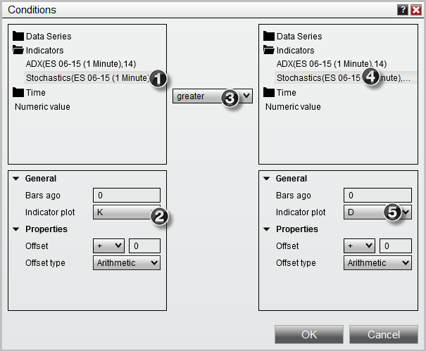
Once the OK button is pressed, a condition is created that would translate to the following:
"Current K plot value of a Stochastics indicator is greater than the current D plot value of the same Stochastics indicator" |
 How to create a cross over condition
How to create a cross over condition
Cross Over ConditionsYou can check for either a Cross Above or Cross Below condition with a user defined look back period. The look back period sets the number of bars to look back to check for the cross over condition.
The following is an an example and represents one of many possible combinations. We have already added two EMA indicators (9 period EMA and 20 period EMA) to our chart so they are both available as condition objects.
1.Under the Indicators category, select the 9 period EMA indicator 2.Select "cross above" relational operator 3.Set the Look back period 4.Under the Indicators category, select the 20 period EMA indicator
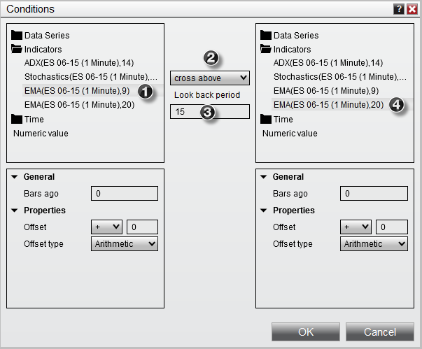
Once the OK button is pressed, a condition is created that would translate to the following:
"9 period exponential moving average crosses above the 20 period exponential moving average in the last 15 bars" |
 How to compare account position information
How to compare account position information
Creating Account Position ComparisonsYou can compare your current account state information such as but not limited to account PnL or position size using the Market Analyzer.
The following is an an example and represents one of many possible combinations. We have already added the Unrealized profit loss column to our Market Analyzer so it is available as condition object.
1.Under the Columns category, select the Unrealized profit loss column 2.Select the "less" relational operator 3.Under the Columns category, select the Number Value category 4.Set the Value
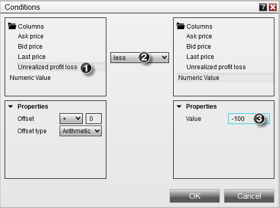
Once the OK button is pressed, a condition is created that would translate to the following:
"Current Unrealized profit loss is less than -$100" |
 How to create time comparisons
How to create time comparisons
Creating Time ComparisonsYou can compare a chart bar's time data to a user defined time or date value.
The following is an an example and represents one of many possible combinations.
1.Select the Time category and select the Data Series series 2.Select the "greater equal" relational operator 3.Expand the Time value category 4.Set the Time value parameter to a user defined value of "10:00 AM"
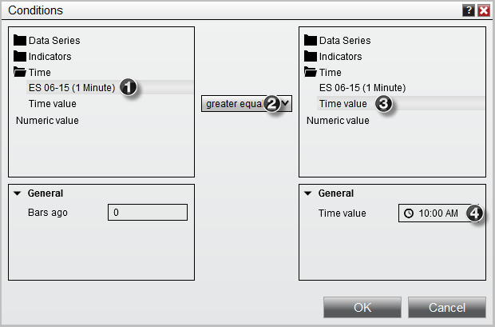
Once the OK button is pressed, a condition is created that would translate to the following:
"Current bar's time is greater or equal to 10:00 AM" |